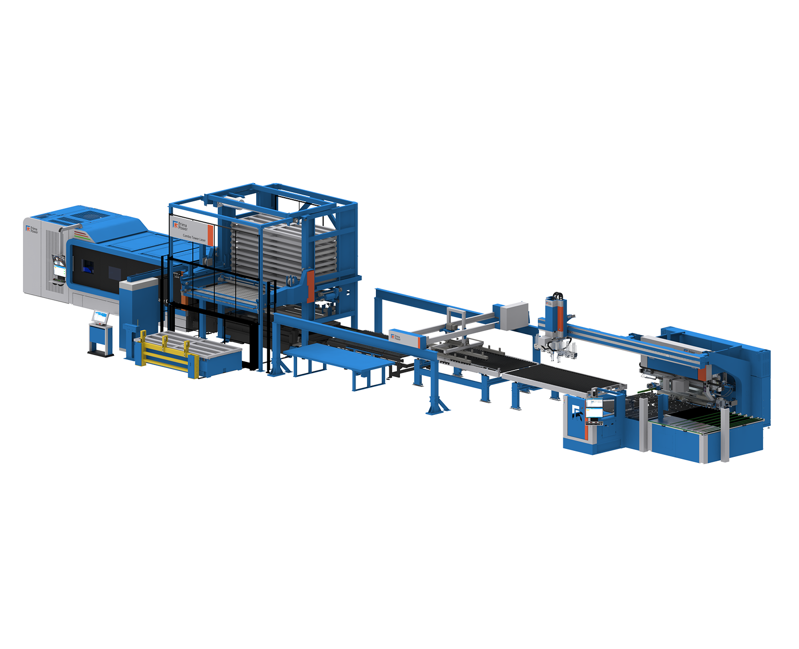
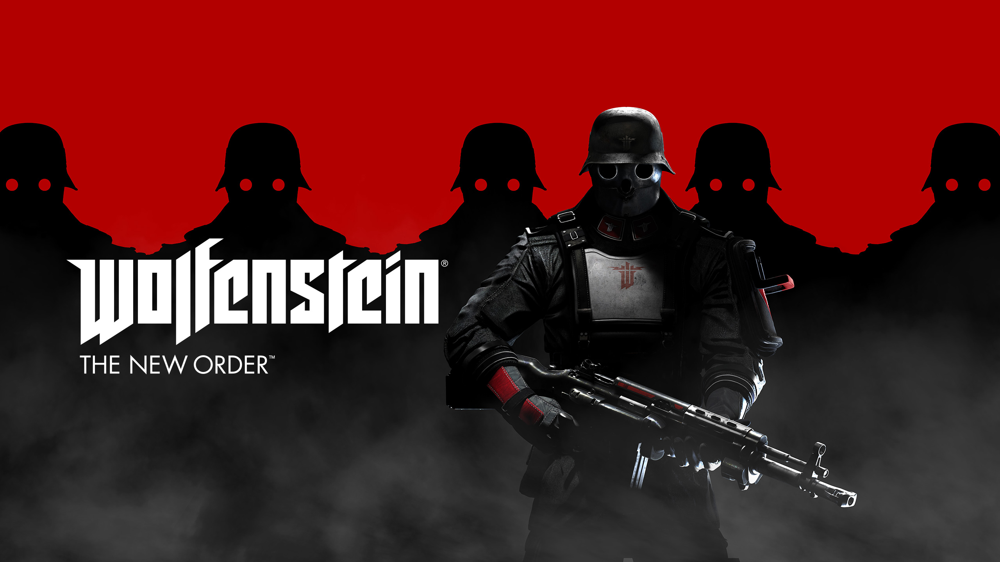
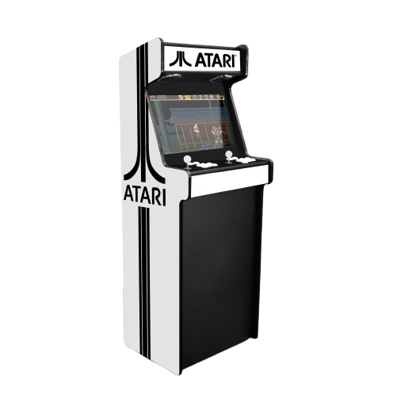
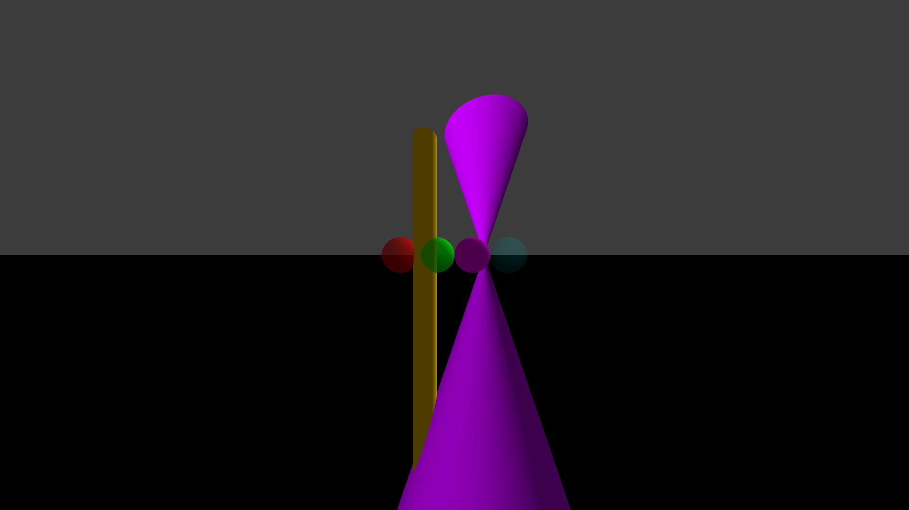
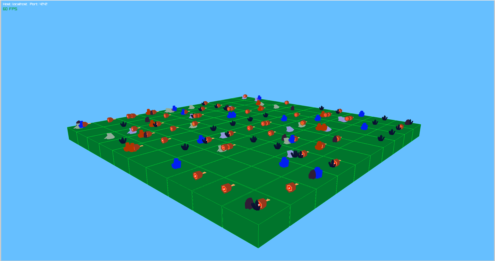
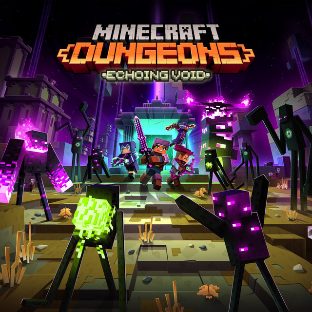

J'ai 20 ans, je suis passionné d'informatique depuis l'âge de 7 ans. Mon parcours a commencé par l'optimisation de logiciels pour améliorer les performances de Minecraft sur PC. Cette première expérience m'a ensuite amené à explorer le hardware, avant de revenir vers ma passion première : le développement logiciel.

Expert en Technologie de l'information (Bac +5, Equivalent Maîtrise/Master)
Expert en Ingénieurie Logiciel (RNCP Niv 7)
Baccalauréat Général
Brevet des Collèges, Section Général, Mention Assez-Bien
Gestion quotidienne du secrétariat, de la relation clientèle et du suivi administratif, tout en assurant la maintenance technique des outils numériques de l'entreprise.
Refonte du site web de l'Auto-École avec intégration des technologies modernes.
Stage dans une pharmacie couvrant les aspects administratifs, de gestion et opérationnels de l'activité.
Ce projet est une reproduction d'une ligne de production d'une usine. Il utilise le concept de "liste chaînée" pour simuler le fonctionnement d'une chaîne de montage avec différentes étapes de production.

Ce projet est un clone du célèbre jeu Wolfenstein 3D. Il a été développé en C et utilise la bibliothèque CSFML pour les interactions graphiques. Le rendu 3D a été réalisé grâce à un moteur de rendu recréé par nous utilisant la technologie du Raycasting.

Ce projet est un moteur de jeu d'arcade modulaire en C++ permettant de jouer à plusieurs jeux avec différentes bibliothèques graphiques (ncurses, SDL2, raylib), avec la possibilité de changer de bibliothèque graphique en cours de partie sans interrompre le jeu.

Ce projet est un moteur de ray tracing fonctionnant sur CPU qui génère des images photoréalistes à partir de scènes 3D définies en texte. Il simule la propagation de la lumière en lançant un rayon par pixel et en calculant les intersections avec les objets de la scène.

Zappy est un jeu multijoueur en temps réel où plusieurs équipes s'affrontent sur une carte torique à la recherche de ressources rares, dans le but de faire évoluer au moins 6 joueurs jusqu'au niveau maximum.

Ce projet est un mod Minecraft Java (Fabric) porté depuis le DLC « Echoing Void » de Minecraft Dungeons. Il enrichit la dimension de l'End avec un nouveau biome, des créatures, une progression de fin de partie et des objets légendaires, sans altérer le gameplay de base.

Langue maternelle
Baccalauréat Niveau (B2)
TEPITECH (Equivalent TOEIC) : 825/990
23Bis Rue du Général Leclerc
54300, Lunéville, France